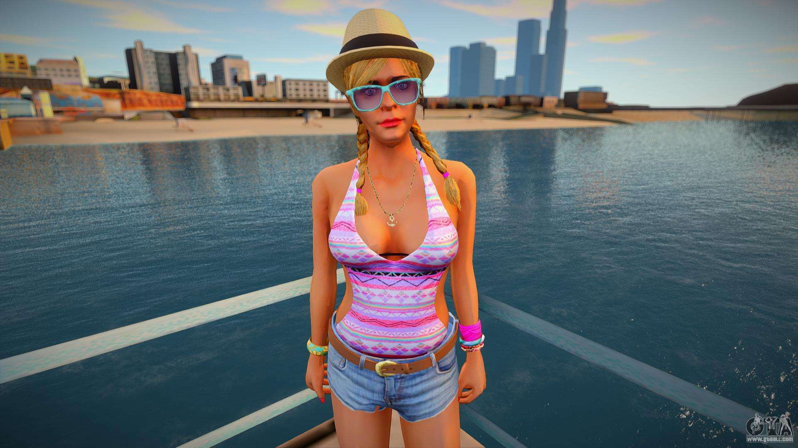
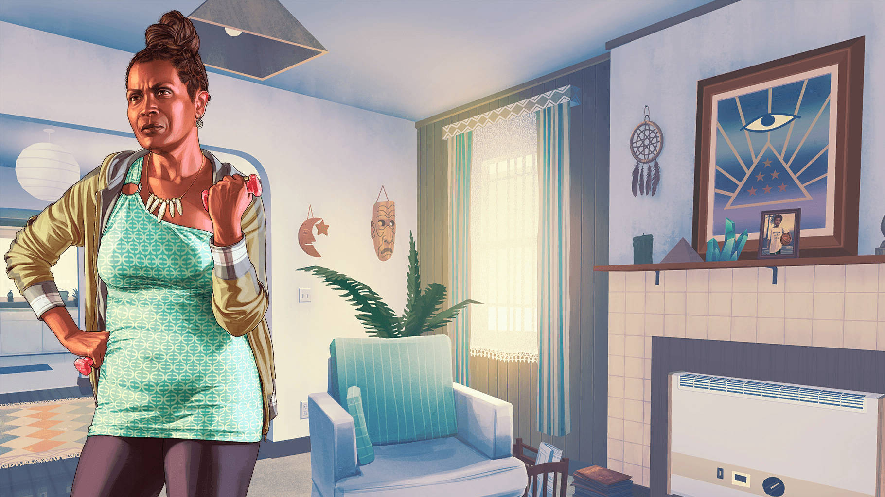

Tracey De Santa es un personaje de la saga Grand Theft Auto que aparece como secundario en Grand Theft Auto V. Es la hija de Michael y Amanda y la hermana mayor de James, con quien vive peleando. Tiene un novio del que se desconoce su nombre. Tiene 22 años, acorde a su cuenta de Bleeter, y vive en la mansión con el resto de su familia.

James "Jimmy" De Santa, es un personaje de la saga GTA que aparece como secundario en Grand Theft Auto V y Grand Theft Auto Online. Jimmy es el hijo de Michael, uno de los tres protagonistas del juego.
Lamar se considera un gánster, y es amigo de toda la vida de Franklin. Suele vestir ropas sueltas y tiene un acento particular de barrio. En cuanto a su comportamiento, Lamar es bastante impulsivo y torpe, llevándolo a los problemas algunas veces. Es leal a sus principios como gánster pandillero y fiel a sus colores, representando su vida como tal. Ésto es aclarado en una de sus salidas con Trevor.
Denise y Franklin viven juntos en una casa en Strawberry, sin embargo, ella lo ve a él con falta de ambición y quiere que se mude, tanto así que le pide su otro sobrino Tavell Clinton que se lleve a vivir a Franklin con él en Liberty City. Denise tiene una relación muy fría con Franklin, ella se refiere a él como "un error" que su hermana cometió.

Ronald Jakowski, conocido también bajo el apodo de Ron, es un personaje de la saga Grand Theft Auto que hace su aparición en Grand Theft Auto V y Grand Theft Auto Online. Es un personaje que vive en un pequeño remolque, localizado en Sandy Shores. También, es vecino y amigo de unos de los protagonistas del GTA V, Trevor Philips. Es la mano derecha de Trevor y poseedor de un pequeño programa de radio.